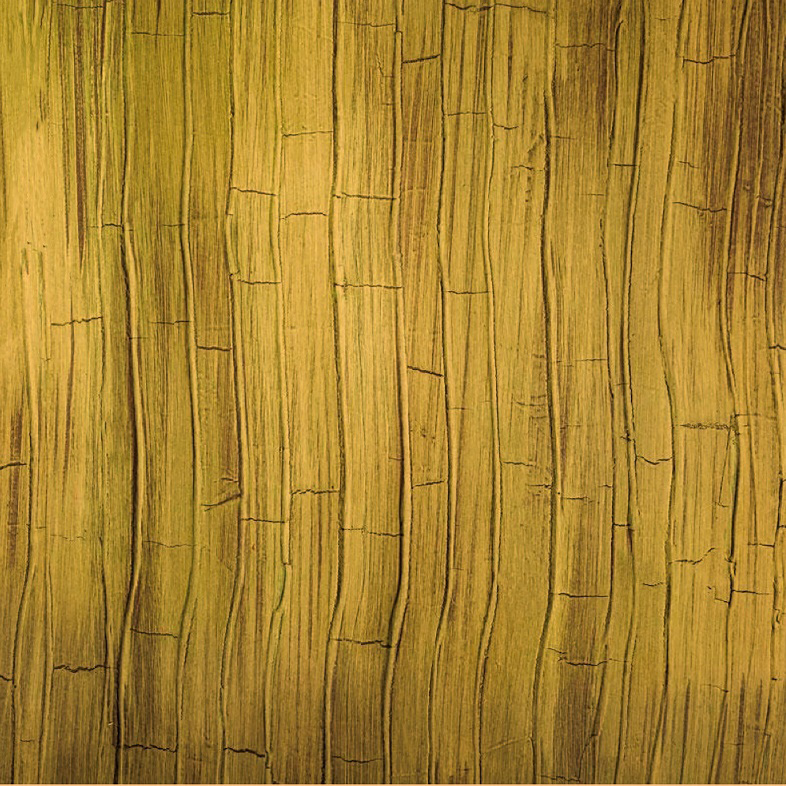

Exercise 3.4
Some artists make their paintings by sketching their ideas on the working surface, while others use stencils. Describe the importance of using a stencil technique to make simple decorative paintings.
Simple decorative painting is not done without purpose but aims to achieve a specific goal. Briefly describe its benefits.
Techniques for creating simple decorative paintings
There are several techniques an artist can use to make simple decorative paintings. Some of them include faux, stencil, sponge, stripe, and ornamentation.
Faux decorative painting technique
The technique originated from the French word faux, which means false. The technique is applied by imitating a variety of materials such as wood, skin, and marble to a surface by using various finishing materials like paints, plaster or any other related material. Figure 3.14 shows an example of a faux decorative painting.
